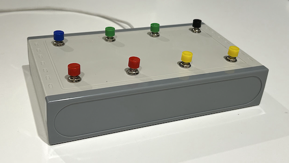

The App
Over the years, I've tried countless guitar practice tools, but settled ones that let me slow down and loop videos. I'm a software developer, so I'd built a web app just to my taste that did all that, using keyboard shortcuts to control things. This site is the most recent iteration.
You can use it as it is, to practice with slowed YouTube videos or media files stored on your computer. If you're feeling adventurous, you can go ahead and build the pedal for an even better hands-free experience.
What Pedal?

Not long ago, I discovered the Vidami pedal, which controls Youtube videos - but with your feet. A great idea, as it saves you from having to leave the guitar, to set loops or change speeds.
They're very pricey though! I'm a software developer and a hobbyist in electronics so, "Why buy it, when you can spend a month working out how to build it yourself"!
Had a lot fun in the process and I'm happy to share the pedal plans with anyone that wants to have a go too. You can do the whole thing for around $25
If nobody else ever uses this project, that's okay. It was originally created to help me practice guitar in a way that felt natural and efficient. But if it also helps you master tricky riffs, improve your timing, or just have more fun while learning, then I'll be thrilled to have shared it.
Thanks for stopping by—and happy practicing!
Adrian